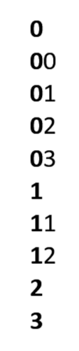

Esta es otra característica opcional diseñada para ayudarte sin ser intrusiva. Por ejemplo, con SECURElogBook puedes agregar o quitar tiempo manualmente o usar los diálogos dedicados para hacerlo de manera rápida y precisa. Además, puedes elegir prestar atención a los mensajes codificados por colores después de crear o editar un registro. Estos mensajes ayudan a confirmar tus acciones: el rojo indica hoy, el azul indica mañana, el negro indica pasado mañana y el verde indica pasado mañana. La aplicación está repleta de características y detalles para ayudarte a lograr lo que quieres sin interferir. Ahora, si lo deseas, podrás organizar tu información con precisión profesional con la Biblioteca de Etiquetas.
SECURElogBook te permite guardar información (texto, fecha y hora) y almacenarla cronológicamente como registros:

SECURElogBook ha sido diseñado con flexibilidad en mente, haciéndolo adecuado tanto para el trabajo como para el uso personal.
Introducir información es lo más fácil posible, alentándote a registrar y seguir todo lo que necesites.
La aplicación tiene un potente sistema de búsqueda que te permite encontrar lo que deseas. Todos sabemos que es fácil encontrar cosas cuando tienes pocas cosas. Una vez que tienes unos pocos miles de registros, será difícil encontrar la información que buscas.
Cuanto mejor sea tu memoria, más información podrás procesar. Pero para facilitar las cosas, podemos usar una herramienta que nos ayude a mantener todos nuestros datos bajo control. Esta nueva herramienta se llama Biblioteca de Etiquetas.
Esta nueva característica permitirá que SECURElogBook no solo haga múltiples cosas como programar tu día usando solamente tu teléfono, seguir lo que comes, cuánto ejercicio haces... Ahora, la aplicación proporcionará un mejor control sobre su información. Diseñé SECURElogBook para manejar toda tu información usando solo tu teléfono (la mayoría de las aplicaciones de teléfono necesitan un programa para PC y acceso a Internet). Ahora, gracias a la Biblioteca de Etiquetas, la aplicación es como un Ferrari para la información en tu mano. Puedes conducir tu Ferrari lentamente o ganar una carrera! Depende de lo que quieras hacer. Cuanto más sepas sobre coches y más practiques, más podrás lograr con él. Lo mismo se aplica para SECURElogBook.
Como todo en SECURElogBook, la Biblioteca de Etiquetas es fácil de usar y práctica. Puedes encontrarla simplemente deslizando en cualquier caja de texto. La idea es que puedas almacenar tu información en un contenedor virtual que definiste con una etiqueta.
Podemos ver las etiquetas como un contenedor virtual o un identificador para controlar/agrupar nuestra información. Por ejemplo, podemos crear etiquetas como COMIDA y AGUA. Estas etiquetas nos ayudarían a agrupar todos los registros que tuvieran una relación con ellas: COMIDA ensalada, COMIDA bocadillo, AGUA zumo de naranja 200ml, AGUA café 250ml, ... Luego podríamos usar las etiquetas AGUA y COMIDA para, por ejemplo saber qué y cuándo comimos hoy, o cuanta agua bebimos ayer.
Toda tu información sigue en la misma lista, pero gracias a la Biblioteca de Etiquetas puedes usar el sistema de búsqueda para encontrar lo que buscas con solo unos toques en la pantalla.
Si usas etiquetas para crear registros importantes, será imposible perderlos porque estarán almacenados dentro de ese contenedor virtual llamado etiqueta.
El sistema de Biblioteca de Etiquetas te permite usar íconos y agregar una definición a las etiquetas. Las etiquetas también se pueden agregar y eliminar. Finalmente, toda la información de la Biblioteca de Etiquetas se incluirá dentro de la copia de seguridad.
Ahora, gracias al sistema de Biblioteca de Etiquetas, tendrás control total sobre tu información, ya que en lugar de tener los registros de manera independiente, podrás agruparlos agregando una etiqueta que te permitirá encontrarlos fácilmente.
La Biblioteca de Etiquetas puede considerarse una versión más rápida del menú de Favoritos. Como todo en SECURElogBook, es opcional y puede adaptarse a tu vida. La buena noticia es que ahora tienes una característica extra que hará las cosas más fáciles y mejores. Recuerda, con SECURElogBook, no estás limitado—cuanto más sabes, más puedes hacer.
Se puede acceder a la Biblioteca de Etiquetas desde cualquier caja de texto dentro de las ventanas de registros para crear, editar y buscar, así como en las tareas del editor de Favoritos.
1. Para acceder a la Biblioteca de Etiquetas desliza a la izquierda o derecha dentro del caja de texto:
Una vez que seleccionamos una etiqueta de la lista, se agregará al frente del texto.
La etiqueta aparece en negrita y su definición la seguirá, si existe.
Una vez que deslizamos dentro del caja de texto, se abrirá la Biblioteca de Etiquetas:

Al igual que con el menú de Favoritos, he agregado algunos ejemplos para darte una idea de lo que puedes hacer con el menú. Recuerda que puedes eliminar las etiquetas predeterminadas si lo deseas. Siempre puedes hacer una copia de seguridad antes de realizar cambios para conservar la información original.
2. Al presionar en la imagen de arriba podrás abrir el editor de la Biblioteca de Etiquetas:
Esta ventana te permitirá crear y eliminar etiquetas.
Para agregar una nueva etiqueta presiona el botón “+”. El nombre de la etiqueta es obligatorio. La definición de tu etiqueta es opcional. Como todo en SECURElogBook, todo es flexible para que puedas adaptarlo a tu vida.
Siempre digo “Cuanto más sabes, más puedes hacer”. En este caso, eso significa que si sabes cómo Android muestra elementos en una lista, puedes usar esa información para facilitarte las cosas.
Para resumir, el orden es: espacio, números, símbolos, mayúsculas, minúsculas, mayúsculas con acento, minúsculas con acento, emojis.
Ten en cuenta que Android hace una diferencia entre mayúsculas y minúsculas. Eso significa que todas las palabras que comienzan con mayúscula se mostrarán antes que las que comienzan con minúscula. Puedes usar esta característica para controlar dónde se mostrarán los elementos en tu lista.
Una forma fácil de mover un elemento hacia arriba en la lista es agregar un espacio al frente. Los emojis están al final, pero agregar un espacio delante de ellos los moverá al principio de la lista.
Este es el orden que Android usa para ordenar elementos en una lista por defecto:
Esta es una buena aproximación para intentar ordenar los más de 149,000 caracteres presentes en Unicode.
Otra cosa importante a saber es que Android ordenará los dígitos comparándolos de izquierda a derecha:

Eso significa que si quieres ordenar más de 10 elementos en tu lista, es mejor usar siempre dígitos dobles: 01, 02, 03, …